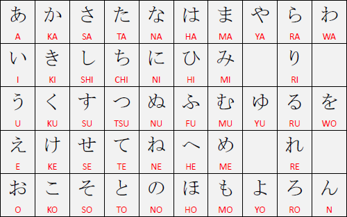

Tabela Hiragana
Contém 46 ideogramas:

Algumas letras podem possuir o mesmo som, por exemplo os ideogramas:
お = O
を = WO
Ambos se pronunciam "O".
Os sinais " e ° alteram o som da letra, por exemplo os ideogramas:
か = KA
が = GA
ou
は = HA
ぱ = PA
São iguais porém tem o sinal de modificação para alterar a pronúncia.
Sobre o Romaji:
A forma de escrever em português a pronúncia de um ideograma, não tem certo ou errado, é apenas uma representação do som.